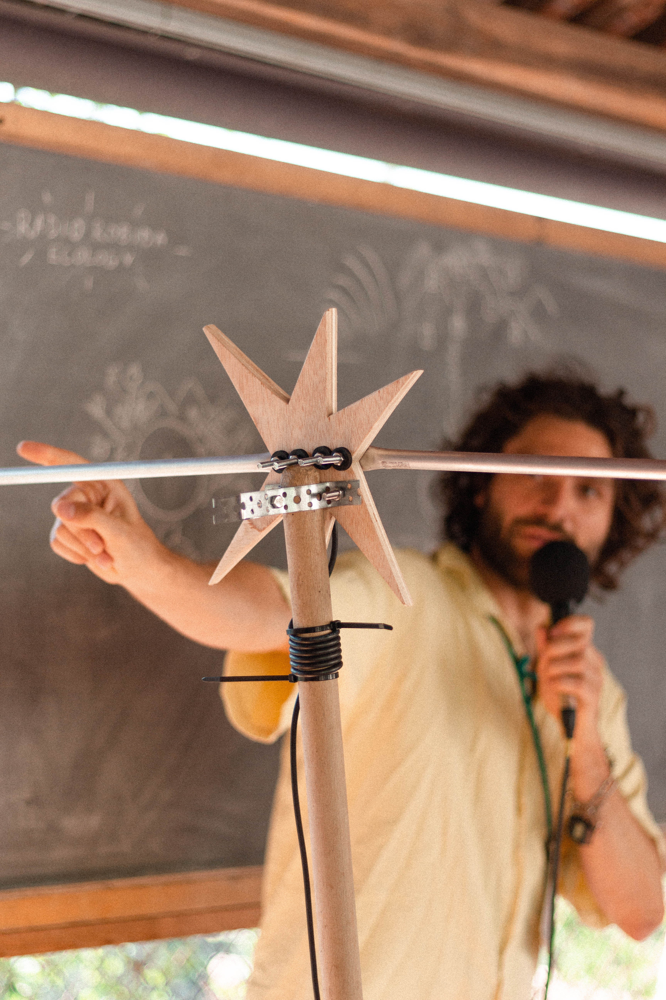
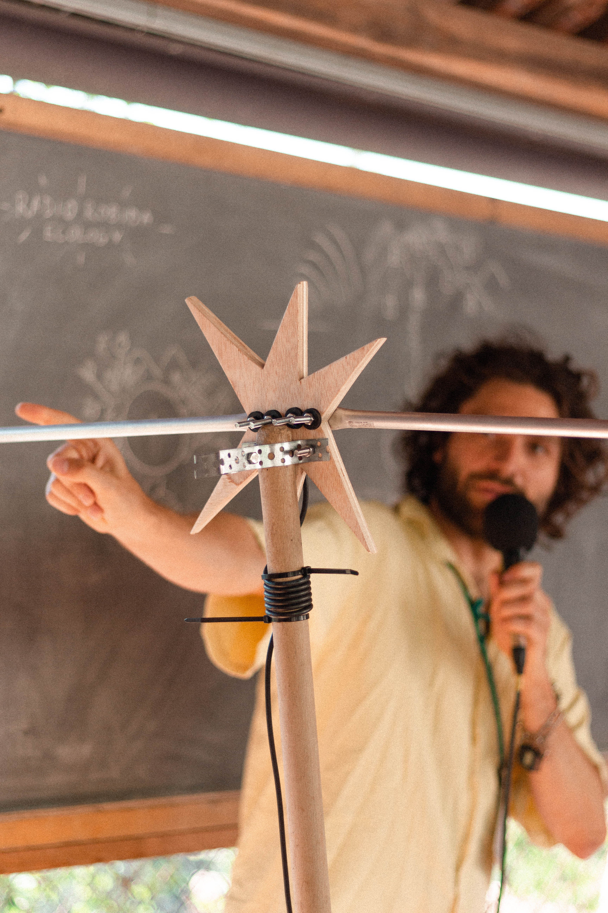

Ugly Magic – Radio Gardening Summer School
Two pieces of metal attached to a wooden stick, a black vine coils its way down to a small box. It could be a peculiarly placed garden tool. It’s all that is needed to send an invisible doughnut of waves cascading down the hills. Invisible waves carrying the audio activity of the summer school. This micro-power radio station was part of a looping audio ecology that connected the participants to each other, the landscape and out to Robida Collective’s wider online community.Walkie-talkie radios, were given to all participants in small pouches which allowed us to communicate happenings and organise on the fly while also listening live to the stations activity without relying on the temperamental local internet connection.
The walkie-talkies were connected back to the radio which in turn was broadcast as a channel on the Robida website, allowing the wider community to listen in real time to what grows from this infrastructural intervention. This led to surprising new forms of decentralised radio making such as a strimmer impression competition lead by Agnes Cameron.
Since helping to set up their internet radio station five years ago, Robida Collective invited me back to help with the curation of the Radio Gardening Summer school. My contribution was to develop and build this hybrid radio infrastructure along with Aljaž Škrlep. The radio website which formed a large part of this ecology was designed and developed by Kirsten Spruit and Benjamin Earl.
Design and Curation
Website development by Kirsten Spruit and Benjamin Earl
 
